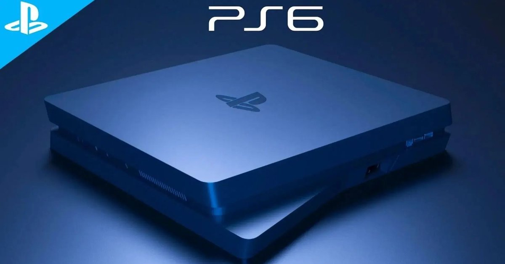

PlayStation 6 – Nowa generacja grania

Opublikowano: 13 stycznia 2026
Design i konstrukcja konsoli
PlayStation 6 to całkowicie nowy projekt Sony, który stawia na futurystyczny wygląd,
cichą pracę oraz wysoką wydajność. Konsola jest smuklejsza od PS5, a jednocześnie
bardziej wydajna i energooszczędna.
- Nowoczesna, modularna konstrukcja.
- Zaawansowany system chłodzenia cieczą.
- Minimalistyczne podświetlenie RGB.
- Ultra-cicha praca nawet pod dużym obciążeniem.
Specyfikacja techniczna
- Procesor: AMD Zen 6 (8 rdzeni / 16 wątków).
- Karta graficzna: RDNA 5 z Ray Tracing 2.0.
- Pamięć RAM: 32 GB GDDR7.
- Dysk SSD NVMe 2 TB (szybkość do 12 GB/s).
- Obsługa rozdzielczości do 8K oraz 4K 240 Hz.
Grafika i technologie
PS6 wprowadza nową jakość wizualną dzięki zaawansowanym technologiom renderowania
obrazu i sztucznej inteligencji.
- Ray Tracing 2.0 – realistyczne oświetlenie i odbicia.
- PlayStation AI Upscaling – inteligentne skalowanie obrazu.
- HDR nowej generacji i obsługa Dolby Vision.
- Stabilne 120–240 FPS w grach esportowych.
Nowy kontroler DualSense 2
Sony zaprezentowało także nową wersję kontrolera – DualSense 2, który jeszcze
bardziej zwiększa immersję gracza.
- Ulepszone haptyczne wibracje.
- Adaptacyjne triggery z większą precyzją.
- Wbudowany ekran dotykowy.
- Czujniki biometryczne (puls, nacisk dłoni).
VR i przyszłość rozrywki
PlayStation 6 oferuje natywne wsparcie dla **PlayStation VR 3.0**, które pozwala
na jeszcze głębsze doświadczenia w wirtualnej rzeczywistości.
- Rozdzielczość VR 4K na każde oko.
- Pełne śledzenie ruchu ciała.
- Integracja z grami AAA i e-sportem.
Usługi i ekosystem
- Nowa wersja PlayStation Plus z dostępem do setek gier.
- Cloud Gaming nowej generacji.
- Pełna kompatybilność wsteczna z PS4 i PS5.
- Integracja z PC i urządzeniami mobilnymi.
Dlaczego warto kupić PlayStation 6?
- Ogromny skok technologiczny względem PS5.
- Wyjątkowa grafika i płynność rozgrywki.
- Nowoczesne VR i kontrolery.
- Silny ekosystem gier i usług Sony.
- Gotowość na gry przyszłości.
← Wróć na stronę główną
Źródła / bibliografia